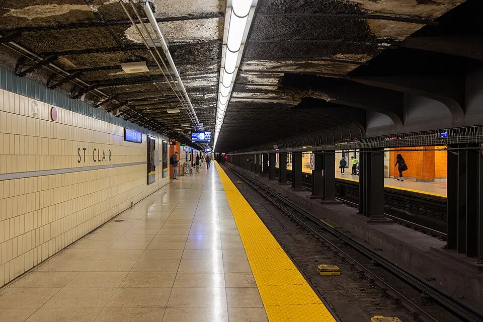

Signal
SignalStation atlas / St Clair
Station history
St Clair


Station history
A mezzanine connected the subway to a surface terminal and a second entrance on Pleasant Boulevard. St Clair streetcars were reorganized to feed the new line.
The TTC removed the Rosehill track crossover immediately south of the station. Its location near the Pleasant Boulevard portal had allowed trains to change tracks.
A replacement crossover was in place by summer as part of preparations for automatic train control on Line 1.